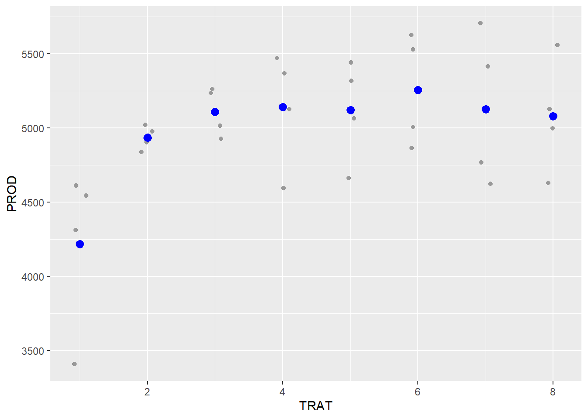

Gráficos de Dispersão, Histograma e Gráfico de Densidade
Vamos aprender a criação de graficos de Dispersão, Histograma e Gráfico de Densidade, para isso vamos entender o que cada um representa?
Gráficos de Dispersão são usados para mostrar a relação entre duas variáveis contínuas, ajudando a identificar padrões, tendências ou correlações. São úteis para visualizar se as variáveis têm associação linear ou não.
Histogramas exibem a distribuição de uma única variável contínua, agrupando os dados em intervalos (bins). Eles ajudam a entender a frequência de valores em cada intervalo, revelando a forma geral da distribuição, como simetria, assimetria e presença de outliers.
Gráficos de Densidade fornecem uma versão suavizada do histograma, mostrando a distribuição de probabilidade da variável contínua. Eles facilitam a comparação entre distribuições e ajudam a identificar tendências e picos na densidade dos dados.
Juntos, esses gráficos são ferramentas essenciais para a análise exploratória, permitindo compreender a estrutura e o comportamento dos dados antes de aplicar modelos estatísticos. Vamos lá?
Gráficos de Dispersão (Scatterplots)
Gráficos de dispersão são utilizados para representar a relação entre duas variáveis numéricas contínuas. Cada ponto no gráfico representa uma observação, posicionada conforme os valores das variáveis nos eixos X (horizontal) e Y (vertical). São úteis para identificar padrões, tendências ou correlações entre variáveis como tempo e velocidade, temperatura e umidade, comprimento e largura, entre outras.
Com o pacote ggplot2, utilizamos a função geom_point() para construir scatterplots. Esta função permite definir diversas estéticas:
alpha: controla a transparência dos pontos, útil para reduzir sobreposição;colour: define a cor dos pontos com o argumentocolor = "nome da cor";fill: define o preenchimento da forma, também com o nome da cor entre aspas;shape: altera o formato dos pontos (como círculos, quadrados ou triângulos), permitindo diferenciar categorias;size: controla o tamanho dos pontos, com um valor numérico.
Importação de dados
Para importar uma aba específica de um arquivo Excel, usa-se a função read_excel() do pacote readxl. É necessário informar o caminho do arquivo (entre aspas) e, após a vírgula, o nome ou o número da aba. O nome do data frame atribuído geralmente corresponde ao nome da aba para facilitar a organização.
Visualização: Depois, plota-se os dados definindo-se o eixo x e depois o eixo y. Usa-se o stat_summary para plotar a média de forma simples.
Code

Code
Alterando o eixo x, presente no banco de dados fungicida_campo, é possível representar os dados em função da produtividade. Ao incluir o argumento alpha dentro da função geom_point(), os pontos no gráfico se tornam mais transparentes, facilitando a visualização em casos de sobreposição.
Code
Para adicionar uma linha de tendência aos dados, utiliza-se a função geom_smooth(). O argumento method = "lm" ajusta uma regressão linear, enquanto se = FALSE remove a faixa de confiança. O parâmetro linetype permite definir o estilo da linha.
Code
Gráficos de dispersão para análise fatorial
Vamos trabalhar com outro subconjunto de dados: Milho. Nele iremos avaliar a variaçção da produtividade em função dos métodos de inoculação.
Code

Para avaliar qual hibrido apresenta mais doença, usamos:
Histogramas
Construção de Histogramas com geom_histogram()
Para construir histogramas no ggplot2, utilizamos a função geom_histogram(), que exige apenas o mapeamento da variável no eixo x. O eixo y (frequência) é calculado automaticamente com base na contagem dos dados em cada intervalo (bin).
Histogramas são indicados para avaliar a distribuição de variáveis contínuas, como produtividade, altura, idade, tempo, entre outros. Eles permitem observar características importantes da distribuição dos dados, como:
Tendência central (valores mais frequentes),
Variabilidade (dispersão),
Assimetria (simetria ou cauda em um dos lados).
Estéticas (aesthetics) comuns em geom_histogram():
bins: define o número de barras (ou classes) do histograma.color: define a cor do contorno das barras.fill: define a cor de preenchimento das barras.
Exemplo: Histograma da produtividade
A seguir, construiremos um histograma com base em uma variável contínua — produtividade (yld). Neste gráfico, os valores são agrupados em classes (bins), permitindo observar o padrão de distribuição dos dados.
Pergunta para reflexão:
O histograma mostra uma distribuição simétrica? Assimétrica? Os dados estão concentrados em uma faixa específica?
Code
p_yield <- milho |>
ggplot(aes(x = yield))+
geom_histogram(bins = 10, color = "black", fill = "blue")
#Mudando de yield para index:
p_index <- milho |>
ggplot(aes(x = index))+
geom_histogram(bins = 10, color = "black", fill = "orange")
#Combinando gráficos com patchowork: deve-se primeiro definir um nome para cada gráfico
library(patchwork)
(p_yield + p_index)+
plot_annotation(tag_levels = "A")Gráfico de Densidade
Gráficos de densidade são ferramentas poderosas para visualizar a distribuição de probabilidade de uma variável contínua. Eles ajudam a identificar padrões, tendências e assimetrias nos dados, fornecendo uma estimativa suave da densidade de frequência ao longo do intervalo da variável.
Esses gráficos são especialmente úteis para representar distribuições como:
Alturas ou pesos em uma população,
Pontuações em testes padronizados,
Qualquer outra variável contínua que exija análise da forma de sua distribuição.
No ggplot2, o gráfico de densidade é criado com a função geom_density(), que calcula e plota uma curva contínua que representa a densidade dos dados, vamos ver como?
Gráfico de colunas
Para aprendermos a criar um gráfico de colunas, iremos usar um subconjunto de dados.